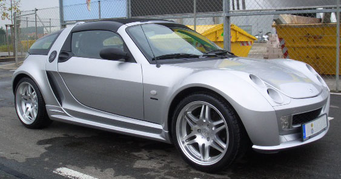

24th October 2024
For reasons known only to the voices in my head I decided my first car should be a Smart Roadster Coupe. It's a cheap and cheerful, cute little car, and since I don't have any friends it's great for getting around because it's the size of a shoebox. Gets good petrol mileage too.

For a cheap car designed in 2000 it's remarkably computerized, even the gearbox is handled by the ECU, with motors controlling the clutch and gear selection (Some people claim the gearbox is hopeless, that's only partially true, the self-learning clutch needs reteaching every service to keep it sharp, which a lot of people neglect). There are 5 modules total running the show, all linked by one CAN Bus. CAN Bus is a fantastic protocol, developed by Bosch in the 90's, used on everything from yachts (NMEA 2000) to satellites. Modern cars still use an updated variant of it for flinging around all the huge amounts of data that go between the 5 million different modules for the heater control knob or the windscreen washer stalk.
There's 5 modules in a Smart Roadster (or first-generation ForTwo): the ABS module, which also handles traction control, the gauge cluster, the airbag module, the engine/gearbox module, and the "SAM" (Signal Acquisition Module). Car manufacturers love their silly cryptic names for modules. Ford calls their lane-keeping cameras "Image Processing Module A," for example.
The SAM is a core part of the Smart's electrical system, and indeed on many Mercedes cars with a SAM module. It reads in all the signals from the human interface components on the car—window switches, light switches, hazards, key fob, door open switches, etc.—does all the thinking about how and what should be activated (is the roof blocked from opening currently, are the doors locked, is the engine running), then drives the outputs accordingly. It's choc-a-bloc with multi-way connectors, relays, MOSFETs, a heavy gauge wire that goes directly to the battery, and it also pulls double duty as the only fusebox in the car.
This makes it a massive point of failure, and warranty claims related to it are one of the reasons the car was discontinued. The cars like to leak water directly onto this module, resulting in all sorts of fun and unexpected issues. I bought my car broken with this fault and when I turned the key after it arrived on the driveway, the indicators went nuts, and the wipers wouldn't stop wiping. Aside from water ingress, lead-free solder failure is also a known issue, with joints cracking and causing odd behavior. Tin whiskers can also form on some of the solder joints. I once had it happen inside my key, causing it to forget its codes. I had to break into my own car and reprogram it.
The SAM was made by Siemens VDO, with a Motorola MC9S12 processor running the whole show. Using a tool such as an XProg, you can extract all the important data (VIN, mileage, immobilizer keys) and flash it onto a new SAM if needed.
The module that controls the engine and gearbox is called the MEG in Smart language (Motor Engine Gearbox perhaps?). It's a Bosch-labelled part that handles everything engine and gearbox-related (except the starter motor, which is energized by the SAM). There are two different variants of the MEG: one for the regular cars and one for the hopped-up "Brabus" variants. The difference lies exclusively in the code, which is distinct from the area where the map is stored and much harder to program. Being from the early 2000s, it's a pretty simplistic ECU, and since the Smart is turbocharged, you can achieve good gains from remapping it. This can be done with a variety of AliExpress clone ECU programmers. There's also a small serial EEPROM on board that stores the VIN and mileage. If you don't have the MB Star diagnostic tool to marry a different ECU to the car, you can simply copy the EEPROM contents (or move the whole chip over from the old ECU).
In Smart language, this is called the KOMBI, a title so meaningless I refuse to entertain it. It's a Siemens VDO part with a small LCD display for different parameters, a smattering of LED indicator lights, and two stepper-actuated needles for RPM and speed. It's so simplistic that there aren't even separate LEDs for the left and right indicators; there's just one indicator LED for both. The LCD shows the gear you're in and various letters and warning symbols if the car is misbehaving. Like the MEG, there's a serial EEPROM on board for VIN matching, which can be trivially cloned or copied. Interestingly, the speedo also serves to read the analog resistor ladder switch array for the horn and paddle shifters (if fitted). Swapping to a paddle shift steering wheel requires a connector swap in the footwell to connect the steering wheel wires to the cluster rather than the SAM.
These modules are more boring but still worth mentioning. The ABS module is a Bosch unit with traction control you can't fully turn off, preventing you from testing the structural integrity of the plastic body panels. It's prone to water ingress, and when you replace it, most scanners on the market cannot perform the air bleeding procedure—only the Mercedes one (or a knockoff thereof) can. I now have three of these in my attic because they are such a nightmare. The steering angle sensor connects to the bus and speaks the same protocol as a VW Golf MK4.
The airbag module is fairly inconsequential, with limited airbags (steering wheel and passenger front airbags, seatbelt pretensioners, and some cars have seat airbags too). It's buried far out of the way, and if you need to fiddle with it, you're having a very bad day indeed.
Power steering was not fitted to all cars. It's an electric power steering system with a basic brushed motor controller located in the passenger footwell. It can be removed without any errors and is similar to parts found in older Vauxhall Corsas.
All the modules in the Smart are connected via a two-wire CAN Bus. While most implementations use two wires, this is not guaranteed. GM, for example, used a one-wire CAN implementation called GMLAN for a while. Unlike more modern cars, the Smart does not segregate traffic onto multiple CAN Buses. With no easy avenues for external access to the bus and no critical safety messages on the bus, it’s understandable for the setup to be so basic. The Smart uses an older protocol called K-Line for diagnostics.
The easiest place to tap into the CAN Bus is at the speedo, which requires just four screws to remove. There’s one connector for which the pinout is available at Evilution. The CAN Bus goes through the module rather than just tapping off it. This can be useful for splitting the devices apart to send spoofed data to some modules without affecting others.
CAN Buses can be challenging to decode, especially on modern cars. Fortunately, the opendbc project provides many common CAN Bus definitions in DBC files. There are also online tools for viewing DBC files, and I recommend the SavvyCAN project for those interested in working with CAN Buses.
comma.ai's openpilot is an incredible achievement, with a glorified smartphone and some open source software you can make a lot of modern cars highly automated. With the DBW throttle, electric power steering, and CAN bus to pick up info such as wheel speed it's very well suited to retrofitting.
This is not really a post about openpilot, as that could be a long post all on its own, but I was part of a group that developed a whole bunch of hardware and software to make it all integrate into the Smart. The cliffnotes are we retrofitted the Bosch iBooster from a Tesla Model S, which bolted straight up to the front bulkhead (Smart's braking system was also supplied by Bosch and the Germans love their standards), and only needed a CNC aluminium adapter to adapt the stock Smart master cylinder to the iBooster. We reverse engineered the protocol Tesla used to make the motor move and spoofed those messages. An ADC-DAC board sits in between the accelerator pedal and ECU to spoof the pedal signals when enabled to send fake acceleration commands, and a new power steering ECU plugs in where the old one went to drive the motor when appropriate. Add in the steering angle sensor from a Toyota RAV4 on the steering column as the standard one isn't accurate enough for the job and you have all the parts you need. A custom gateway board links all the new modules together, and taps into the factory CAN bus to go to the Openpilot device.
Wheel turning GIF
A few months ago a man named Mike reached out to me, he runs a company called 223D Developmental, where he takes the 700cc Smart engine and turns it up to some absolutely silly power levels. The engine originally has 60-100hp depending on trim and he's pumping out almost 200hp from it. Part of the mods involve it revving much higher than the original 6000rpm redline, but the stock gauge cluster won't show higher than that. Modifying the firmware on the cluster itself with its mystery meat MCU is pretty difficult, so instead, we can send it fake RPMs to trick it into thinking the RPM is lower than it actually is, and use a custom gauge face to scale it properly. Tapping into the CAN Bus at the speedo also lets us do other things, such as filter the ESP messages to stop it trying to pull engine power at inopportune times, or send it into a fault state so I can finally pull some sick donuts in the Tesco car park at an inappropriately late hour.
The prior openpilot work came in really handy here, I'd already designed exactly the right board for this application and had it kicking around in a drawer. STM32F405, 3 CAN buses (one for the MEG/SAM tree, one for the ABS tree, and one for the speedo itself) and it would run directly off 12V. Originally developed a few years ago to spoof the messages required for the iBooster to work properly, the EAGLE design files can be found here if you have use for such a board (please don't judge my PCB design too much, I designed it a long time ago). The hardest part was finding the right Tyco connectors to plug into the speedo, at one point we were considering printing a connector receptacle but luckily the right ones could be sourced.
All the wires apart from the CAN Bus wires, an always-on 12V and ground go straight from the receptacle to the connector. The board is permanently powered, it's not a huge drain on the car battery and the speedo forms part of the VIN authentication chain when the car is unlocked. It's pointless being able to spoof the RPM if the engine won't start because the immobilizer won't shut off. My PCB had solderable jumpers implemented for the CAN termination resistors on two of the three buses so terminating the new bus going to the cluster was easy.
I'd already got the comma panda codebase appropriately abused for this sort of situation already after developing the iBooster code, and the requirements for the RPM spoofing are even simpler. Instead of needing to send periodic messages, the whole board is interrupt-driven. Between myself and another roadster owner, we fully decoded the car's CAN bus and found the messages we wanted to manipulate. The engine ECU outputs two RPM values on different message addresses, one read by the cluster with a max of 6250 RPM in increments of 25 RPM with all the status light signals on it and another most likely for the ABS so it can help determine if wheelspin is occurring which goes up to 65525 RPM in 1 RPM increments (maybe for a future jet engine swap :p).
The final code can be seen here but the TL;DR is the code reads the true engine RPM from the ABS message with address 0x300 and performs some math to scale it to the message destined for the cluster. Then, when a message on the cluster address 0x190 comes through, it sends it unmodified to the ABS tree of the bus and injects the modified RPM value, then sends it to the cluster tree of the bus. All other messages in all other directions are forwarded unmodified currently, but the capability exists to tweak them too.
Halfway through testing this, my car decided working was overrated and kept trying to turn most of the electrics off whilst driving. When the voltage rose after the engine started, loads of systems would cut in and out with an audible relay click. Driving on the motorway late at night with your headlights going bonkers is not a pleasant experience! The problem ended up being the SAM unit so I had to replace the whole thing again. I'm not sure what specifically the issue was; it's on the long list of jobs to figure out what failed and repair it so I have a spare SAM. My first suspect was a failed capacitor but there's only one electrolytic cap on the board, and it tested fine.